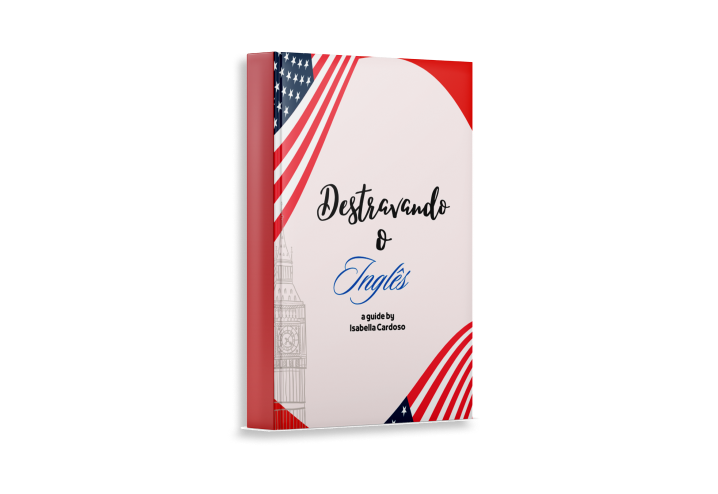

Fale Inglês
Sem Medo
Conheça meu método para destravar seu Inglês de uma vez por todas. Eu vou te mostrar que o verbo to be e a gramática inglesa não são esses monstros que dizem por aí. Minha metodologia aborda práticas inovadoras juntamente com contextos culturais para proporcionar um ensino personalizado, dinâmico e descontraído.
Teacher Isabella Cardoso
Prazer em conhecê-lo(a), meu nome é Isabella, tenho 26 anos, mãe da Bailey (sim, sou mãe de pet). Sou Professora de Inglês formada pela UNESP Campus de Assis-SP. Estudo a língua inglesa desde os 6 anos e há mais de 10 anos. Tenho ensinado centenas de pessoas a serem independentes em inglês para realizarem seus sonhos! Viajei duas vezes para Orlando, onde frequentei o tradicional ensino médio do país. Sou professora de inglês e tradutora técnica com mais de seis anos de experiência, formada em Língua e Literatura Portuguesa/Inglesa pela UNESP.
Administro meu próprio centro de ensino de inglês, oferecendo aulas particulares personalizadas de acordo com as necessidades e objetivos dos alunos. Com uma abordagem dinâmica e ética, busco inspirar e engajar os alunos na aquisição da língua. Como especialista no desenvolvimento de estratégias de ensino inclusivas e dinâmicas, tenho uma pós-graduação em Metodologia do Ensino da Língua Inglesa e estou atualmente a fazer estudos avançados em Tradução, Educação Especial e Educação Inclusiva.
Apaixonada pelo ensino, o meu objetivo é promover uma aprendizagem significativa através de práticas inovadoras e contextos culturais. Como tradutora, especializei-me em traduções técnicas e literárias, garantindo a exatidão e a adequação cultural. A minha dedicação à educação e à comunicação reflete no meu compromisso com a excelência em todos os aspectos do meu trabalho profissional.
Destrave Seu Inglês Agora
No meu eBook você encontrará dicas para aprimorar os seus estudos no idioma. Em 6 capítulos você verá sugestões de como destravar o seu Inglês e alcançar a tão esperada fluência. Por meio deste eBook, você poderá desbloquear seu potencial na língua inglesa por meio de dicas eficazes que vão transformar sua rotina de estudos.
Você poderá aplicar tudo imediatamente, sem enrolação. Com mais de 6 anos de experiência ensinando inglês de forma particular, pelo Estado de São Paulo e por meio de escolas bilingues, refinei estratégias que realmente funcionam para o aprendizado de inglês pelo aluno brasileiro. Pronto para acelerar seu aprendizado em inglês? Garanta seu eBook clicando abaixo.